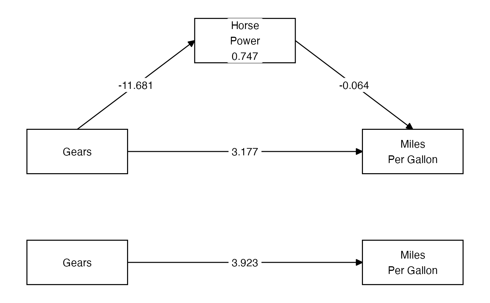

Plot simple mediations with tidySEM
Usage
simple_mediation_plot(
a = NA,
b = NA,
direct = NA,
indirect = NA,
total = NA,
X_name = "X",
M_name = "M",
Y_name = "Y",
...
)Arguments
- a, b, direct, indirect, total
Values or labels to put on the paths (edges).
- X_name, M_name, Y_name
Values or labels to put on the variables (nodes).
- ...
Passed to tidySEM::prepare_graph.
Examples
mod_a <- lm(hp ~ gear, data = mtcars)
mod_bc <- lm(mpg ~ hp + gear, data = mtcars)
a <- coef(mod_a)[2]
b <- coef(mod_bc)[2]
direct <- coef(mod_bc)[3]
indirect <- a * b
total <- direct + indirect
med_plot <- simple_mediation_plot(
a = round(a, 3),
b = round(b, 3),
direct = round(direct, 3),
indirect = round(indirect, 3),
total = round(total, 3),
X_name = "Gears",
M_name = "Horse\nPower",
Y_name = "Miles\nPer Gallon"
)
plot(med_plot)
